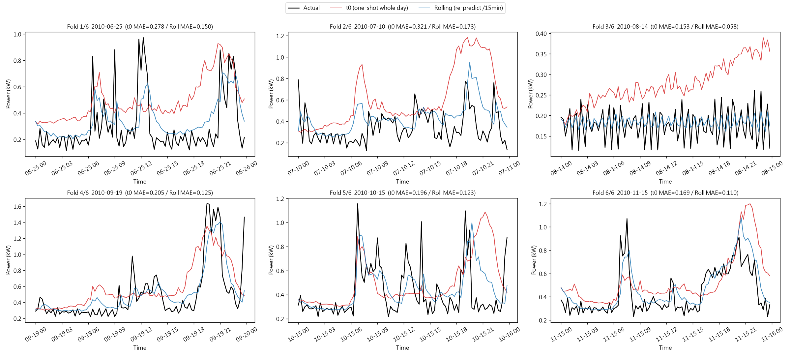
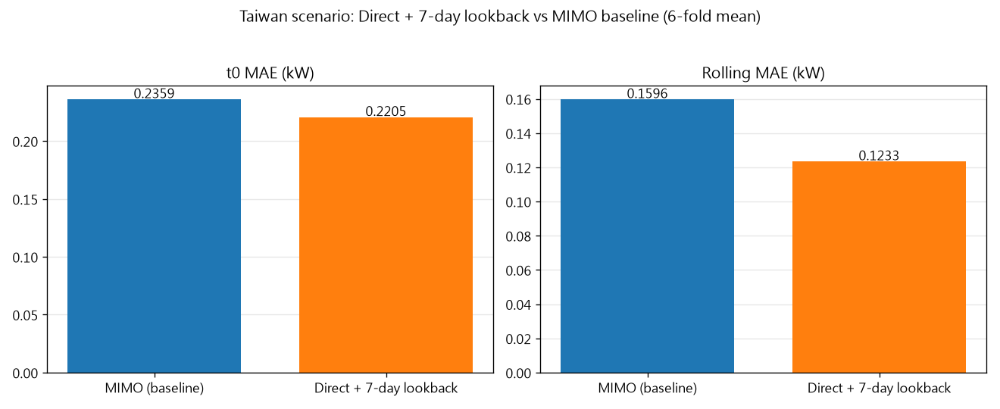
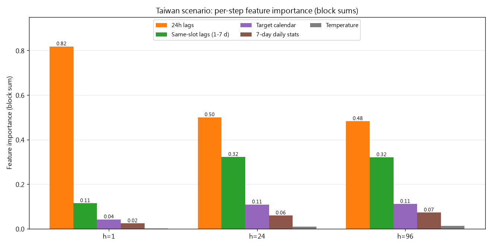
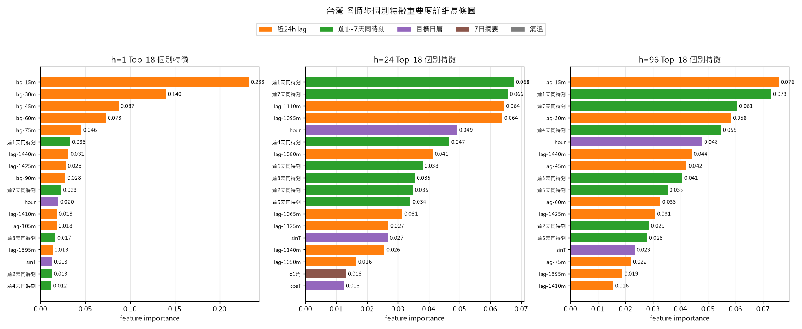
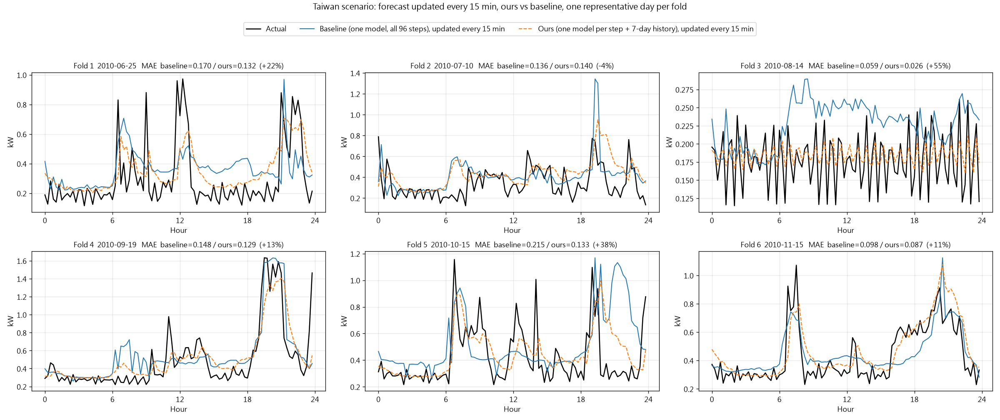
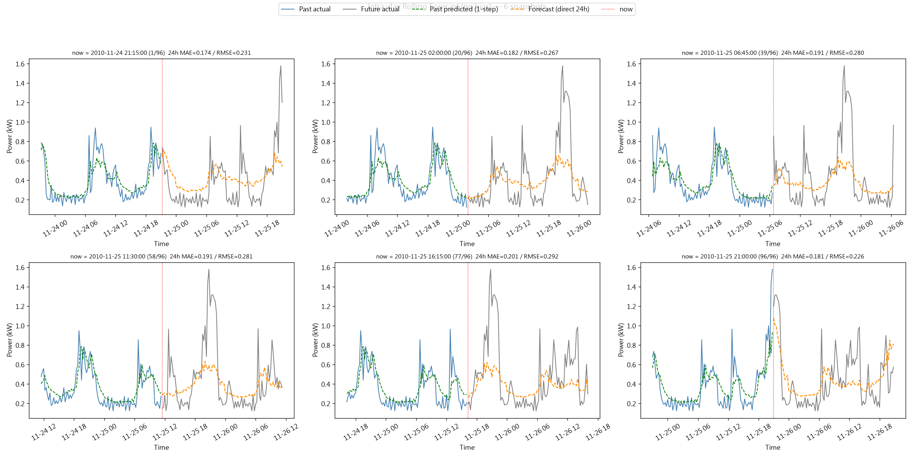

負載預測子系統 — 結果總覽
本頁為系統中「負載預測」部分：單戶住宅不可轉移負載的未來 24 小時預測（96 步、每 15 分鐘），供家庭能源管理排程使用。以下為預測結果、成績與交接資料。
| 模式 | MAE (kW) | RMSE (kW) | R²(flatten) | R²(per-slot) |
|---|---|---|---|---|
| 日內滾動（每 15 分鐘用最新觀測重預測） | 0.123 | 0.200 | +0.70 | +0.46 |
| 日初單次（每天 00:00 一次預測整天） | 0.221 | 0.318 | +0.21 | −0.37 |
點任一張圖可放大檢視；放大後再點一次或按 Esc 關閉，右上角可開啟原始檔。





